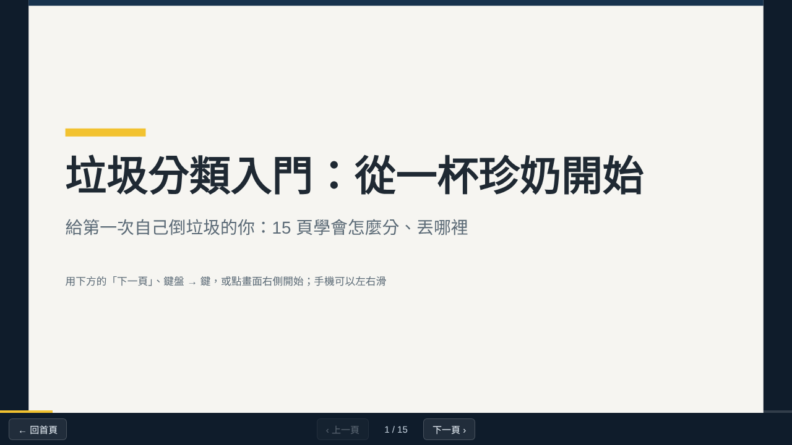

教學簡報：垃圾分類入門
15 頁，寫給第一次自己倒垃圾的大學生。用畫面下方的按鈕、鍵盤方向鍵或左右滑動換頁；每條內容後面的小數字是出處，點下去會打開對應的資料。
開始看簡報 →查資料：垃圾分類 Wiki
簡報裡的每一句話都來自這個 Wiki。想知道某樣東西怎麼丟，可以從目錄找。
這個網站是怎麼做出來的
先和 AI 討論需求、建立 Wiki，再讓 AI 只根據 Wiki 做出簡報。每一步都有程式或另一個 AI 檢查，過程都留下紀錄。
1. 先討論、後生成：建立 Wiki
訪談紀錄建 Wiki 之前，AI 問我的 11 題
需求摘要我確認之後才開始建檔
Wiki 的規則AGENTS.md：頁面格式、出處、讀入流程
Wiki 操作紀錄每一批讀入、檢查與修正
Wiki 獨立審查另一個 AI 對照原始資料檢查
2. 從 Wiki 做出簡報：流程（Graph）
- 檢索 Wiki → 覆蓋率關卡（程式）
- 證據卡 → 證據卡關卡（程式）→ 證據審查（獨立 AI）
- 大綱 → 大綱關卡（程式）→ 使用者確認
- 逐頁稿 → 逐頁稿關卡（程式）→ 忠實度審查（獨立 AI）
- 渲染 HTML（程式）→ 渲染關卡（程式）→ 交件

點圖片可以看原始大小